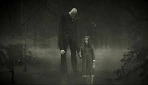

Arquivos
SlenderMan

Ele não tem rosto. Ninguém sabe exatamente quando ele começou a existir, mas a lenda diz que ele sempre esteve aqui. Alto, absurdamente alto, magro como um cadáver em decomposição, vestido com um terno preto impecável que nunca suja. Seus braços são longos demais, às vezes parecem se esticar como tentáculos quando ninguém está olhando diretamente. Slenderman não corre. Ele simplesmente aparece. Ele escolhe crianças e adolescentes. Fica parado entre as árvores, no fundo de fotos antigas, ou no canto de um vídeo. Quem o vê começa a ter pesadelos constantes. As pessoas ao redor da vítima começam a esquecer coisas importantes. Amigos e familiares desaparecem sem deixar rastros. Quanto mais você pesquisa sobre ele, mais ele se aproxima. Ele não mata da forma que você imagina. Ele leva as pessoas. Algumas são encontradas dias depois, empaladas em árvores com os órgãos reorganizados. Outras simplesmente somem para sempre. As que voltam... não voltam inteiras. Elas desenham figuras altas e sem rosto, repetem a mesma frase sem parar e, em pouco tempo, tiram a própria vida. Dizem que se você vir o Slenderman, é tarde demais. Ele já está te observando. E quanto mais você tenta fugir, mais ele aparece — atrás de você no espelho, no final do corredor escuro, ou parado em silêncio no meio da floresta, esperando pacientemente. Porque ele tem todo o tempo do mundo. E ele já sabe seu nome.
Bingles' Birthday Bonanza
A história fala sobre Josh, um garoto que ficou assustado ao ver a capa de um DVD infantil chamado Bingle’s Birthday Bonanza. Na capa havia um homem fantasiado de cachorro de forma muito estranha e assustadora. Mesmo sem comprar o DVD, o irmão mais velho dele, Alfred, roubou o filme da loja e levou para casa escondido. Naquela noite, Josh acordou e viu Alfred assistindo ao DVD escondido. O personagem Bingles parecia falar diretamente com Alfred pela televisão, convidando-o para sua “festa de aniversário” em um lugar sombrio cheio de bonecos velhos e assustadores. Josh desligou o videogame e os pais descobriram o DVD. No dia seguinte, Alfred desapareceu, deixando apenas um bilhete dizendo que tinha ido para a festa de Bingles. A família procurou por ele durante meses, mas nunca o encontrou. Anos depois, Josh percebe que Bingles ainda existe quando vê outra criança segurando o mesmo DVD em uma loja. Ao destruir o filme, ele percebe algo horrível: um dos bonecos da capa tinha o mesmo cabelo vermelho cacheado de Alfred, indicando que seu irmão virou um dos bonecos de Bingles.
The Man with the Upset-Down head

A história da criatura é propositalmente misteriosa, mas ela é descrita como uma entidade humanoide extremamente alta e magra, que possui o rosto invertido de cabeça para baixo, criando uma aparência perturbadora e quase impossível de olhar diretamente. Nas imagens e relatos, ele costuma aparecer: escondido ao fundo de fotos antigas observando pessoas à distância parado em ruas vazias ou florestas surgindo silenciosamente sem ser percebido A sensação principal da criatura é a de desconforto psicológico. Diferente de monstros violentos, ele raramente aparece atacando alguém diretamente. O terror vem da ideia de que ele está sempre observando e que sua presença não deveria existir. Em algumas interpretações, dizem que: olhar muito tempo para ele causa paranoia ele aparece antes de desaparecimentos pessoas só percebem sua presença depois de ver fotografias ele consegue ficar “escondido” da mente humana até ser notado